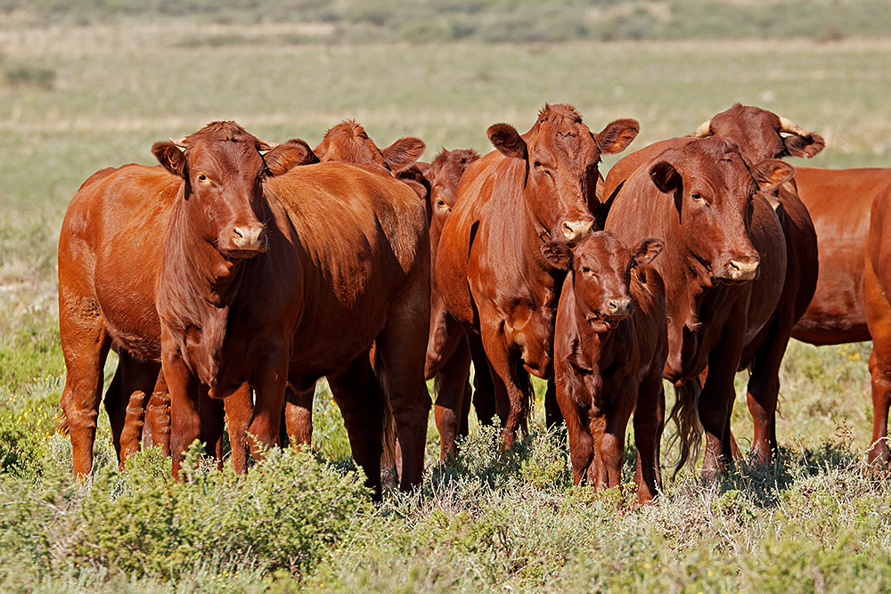
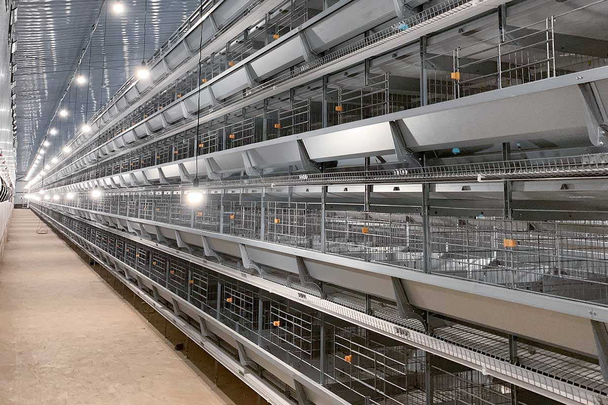
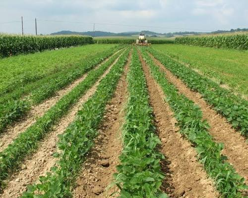
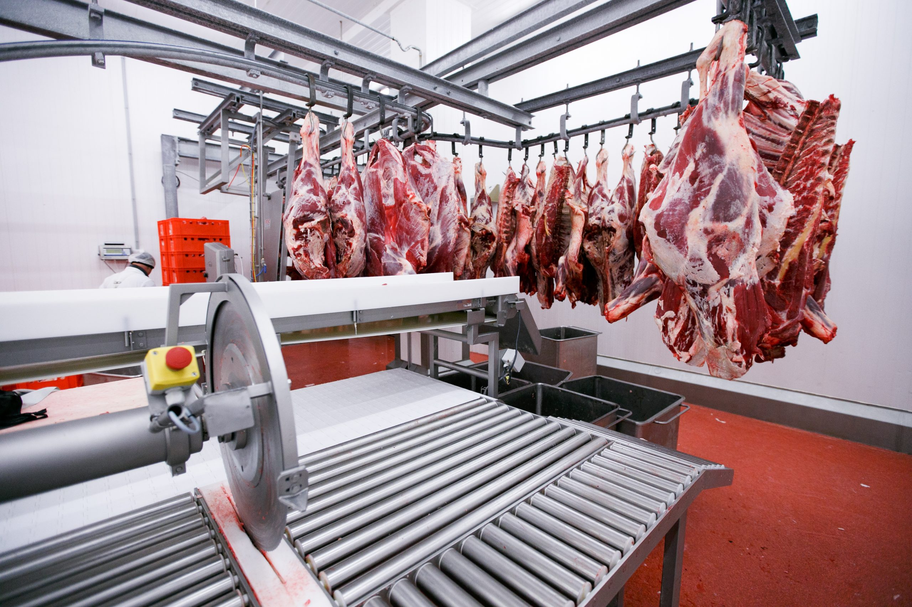
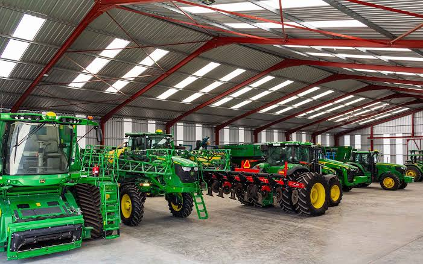
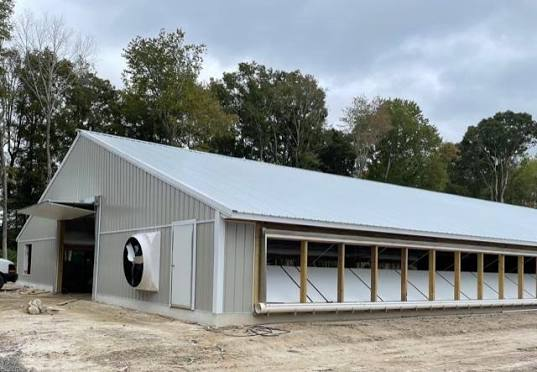

Products and Services
Welcome to our Products and Services page!
Our Products
Livestock
We raise high-quality cattle, goats and sheep. Our animals are well cared for using sustainable farming practices. Fresh meat is available through our own abattoir.

Poultry
Starting from a small backyard operation in 1984, we now supply fresh poultry to the local community. Healthy birds raised with care.

Crops
We grow a variety of crops using good farming methods. Fresh produce is available to households in Disaneng and greater Mafikeng.

Our Services
Meat Processing
We operate our own abattoir for in-house meat processing. This allows us to supply fresh, quality meat directly to customers.

Farm Equipment Supply
We sell farm equipment including tractors and other machinery to support local farmers in the North West region.

Construction Services
We build poultry houses and fencing for other farmers. Quality construction work done by our experienced team.
